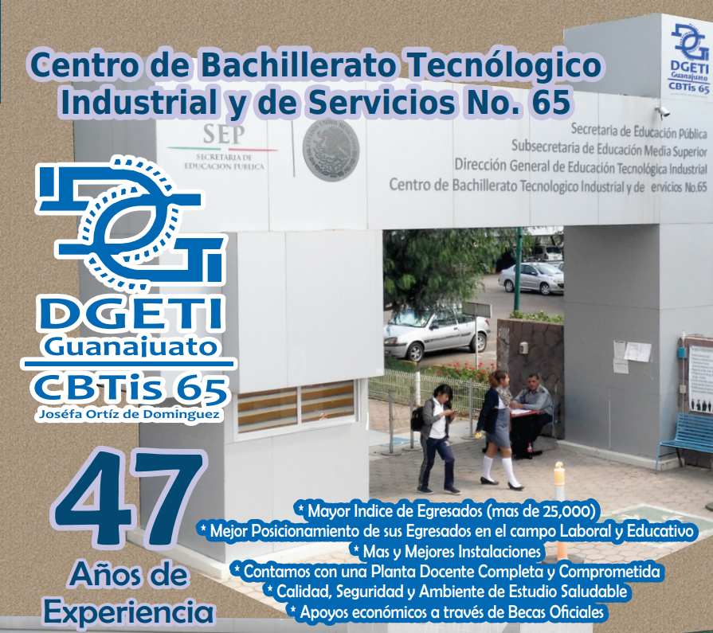

Prefichas a partir del 7 de febrero al 3 de marzo
Entrega de fichas del 13 al 17 de marzo
Requisitos
- 2 fotografías tamaño infantil iguales y recientes
- Promedio de 7.0 como mínimo
- Original de Constancia de Secundaria con promedio de 1ro., 2do.y 3er. grado hasta 2do. bimestre, que especifíque no adeudo de materias.
- Carta de buena Conducata Original
- Copia de Acta de Nacimiento
- Copia de CURP + Folio Surems
- Comprobante de domicilio reciente (teléfono o credencial de elector)
- Costo de recuperación $500.00
- La información para realizar el pago se dara a conocer en la página de internet al tramitar su preficha
- No haber estado inscrito en alguna dependencia federal de educación media superior
*Es requisito indispensable presentar su ficha para el concurso de selección de aspirantes a ingresar en el ciclo escolar 2017-2018 y para cualquier trámite
La fecha del examen de selección será distinta a las demás instituciones de nivel medio superior, dando así la oportunidad a que todos los interesados participen en este concurso de nuevo ingreso. ESTA INSTITUCION NO PARTICIPARÁ EN EL EXAMEN ÚNICO